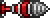
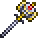

Though, at this point you might feel like you're back at the beginning. It's smart to prepare fast!
Part Six: Pre-Boss Hardmode Mage | ||||
|---|---|---|---|---|
| Back to the Beginning | Re-exploration | New Shiny Metals | ||
 Now that you have come back from the underworld, use your Pwnhammer to destroy some of the Alters in the Evil Biomes. This will be important to obtaining new gear. |
Since your world has changed, learn more about your world. Travel so that you mini-map updates and so that you know how your world has changed. |
Just like before, your next priority is mining. Most of your best weapon options will come from the caves, though it can most certainly be dangerous. |
||
Notable Items |
|||||
|---|---|---|---|---|---|
|  Titanium/Adamantite Drill |
Titanium/Adamantite Armor |
Laser Rifle |
 | ||
Crafting/Obtainment |
|||||
18x Adamantite/Titanium Bar |
78x Adamantite/Titanium Bar |
Dropped by Wall of Flesh |
Dropped by Wall of Flesh |
||
Notable Items [Expert/Master Mode] |
|---|
No effect yet. |
Expert Drop |
No bosses fought |
Notable NPCs |
|---|
Notable Bosses/Enemies |
|
|---|---|
None |
|